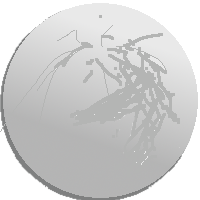

Welcome!
Here you will find information about the development of my first complete game using the Unity Engine, made 2021.
My First Game
Things I Learned
-
1st: Organization.
This is certainly a weak point that I need to pay attention to. Both in the project files and in the names of attributes and scripts, organization is fundamental. Yes, take this seriously, do not wait to exhaust the alphabet to name your variables.
-
2nd: Content.
To get the most out of your idea, you need to understand what the engine can do. To gain this understanding, I watched several videos. I would say that 60% of what I learned about Unity came from these three channels: Brackeys, Dani, and the essential GameDev das Galáxias.
-
3rd: random things.
Use whatever you prefer, but writing down ideas to be implemented or archived and errors to be fixed is essential. Some physical bugs can be leveraged and turned into mechanics!
Improvement points:
-
Visual Effects:
I will try to explore both the Unity Particle System and Post Processing as well as animations (floating coins, smoke-emitting flames, a glow in the stages, etc.).
-
"Endless" Game:
You know those mobile games that seem to have infinite levels? So, I would like to understand the concepts that govern the seed of these levels.
-
Sound:
I had a problem with the tool I planned to use, so I ignored the sound in this project. Note: the name of the tool is sfxr.
-
Boss:
When I thought about making a boss, a lot came to mind, but when it came to implementing it, it was discouraging. It will be a great challenge.